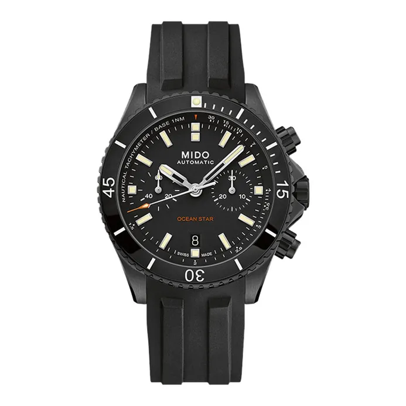

Rp 57.600.000
MIDO Ocean Star Captain Chronograph menghadirkan kombinasi performa tinggi dan desain premium. Ditenagai movement Automatic Caliber 60 dengan power reserve hingga 60 jam, jam tangan ini adalah pilihan terbaik untuk penyelam profesional maupun pecinta horologi.
| Model No. | M026.627.37.051.00 |
|---|---|
| Movement | Automatic Caliber 60 |
| Diameter | 44 mm |
| Thickness | 15.2 mm |
| Case Material | Stainless Steel DLC |
| Strap | Black Rubber Strap |
| Glass | Sapphire Crystal |
| Water Resistance | 200 m |
| Functions | Chronograph, Date, Diving Scale Bezel |